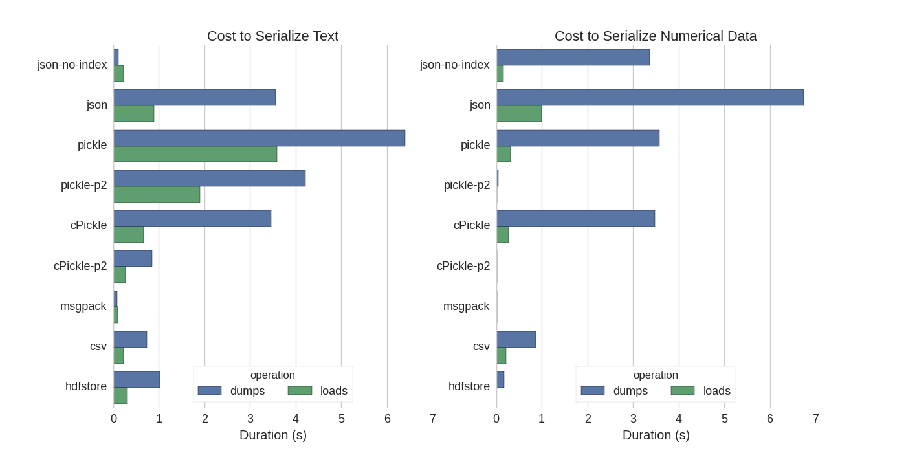

layout: true <div class="my-header"> <svg height="15" width="18" viewBox="0 0 24 24"xmlns="http://www.w3.org/2000/svg" style="fill: #ffffff; margin-left:4px;" role="img"><title>Pandas B2</title><path d="M14.31.18l.9.2.73.26.59.3.45.32.34.34.25.34.16.33.1.3.04.26.02.2-.01.13V8.5l-.05.63-.13.55-.21.46-.26.38-.3.31-.33.25-.35.19-.35.14-.33.1-.3.07-.26.04-.21.02H8.83l-.69.05-.59.14-.5.22-.41.27-.33.32-.27.35-.2.36-.15.37-.1.35-.07.32-.04.27-.02.21v3.06H3.23l-.21-.03-.28-.07-.32-.12-.35-.18-.36-.26-.36-.36-.35-.46-.32-.59-.28-.73-.21-.88-.14-1.05L0 11.97l.06-1.22.16-1.04.24-.87.32-.71.36-.57.4-.44.42-.33.42-.24.4-.16.36-.1.32-.05.24-.01h.16l.06.01h8.16v-.83H6.24l-.01-2.75-.02-.37.05-.34.11-.31.17-.28.25-.26.31-.23.38-.2.44-.18.51-.15.58-.12.64-.1.71-.06.77-.04.84-.02 1.27.05 1.07.13zm-6.3 1.98l-.23.33-.08.41.08.41.23.34.33.22.41.09.41-.09.33-.22.23-.34.08-.41-.08-.41-.23-.33-.33-.22-.41-.09-.41.09-.33.22zM21.1 6.11l.28.06.32.12.35.18.36.27.36.35.35.47.32.59.28.73.21.88.14 1.04.05 1.23-.06 1.23-.16 1.04-.24.86-.32.71-.36.57-.4.45-.42.33-.42.24-.4.16-.36.09-.32.05-.24.02-.16-.01h-8.22v.82h5.84l.01 2.76.02.36-.05.34-.11.31-.17.29-.25.25-.31.24-.38.2-.44.17-.51.15-.58.13-.64.09-.71.07-.77.04-.84.01-1.27-.04-1.07-.14-.9-.2-.73-.25-.59-.3-.45-.33-.34-.34-.25-.34-.16-.33-.1-.3-.04-.25-.02-.2.01-.13v-5.34l.05-.64.13-.54.21-.46.26-.38.3-.32.33-.24.35-.2.35-.14.33-.1.3-.06.26-.04.21-.02.13-.01h5.84l.69-.05.59-.14.5-.21.41-.28.33-.32.27-.35.2-.36.15-.36.1-.35.07-.32.04-.28.02-.21V6.07h2.09l.14.01.21.03zm-6.47 14.25l-.23.33-.08.41.08.41.23.33.33.23.41.08.41-.08.33-.23.23-.33.08-.41-.08-.41-.23-.33-.33-.23-.41-.08-.41.08-.33.23z"></path></svg> <span>C2. Pandas. B2</span> </div> <div class="my-footer"> <p> 2021 - Isaac Lera </p> </div> --- class: center, middle # C2. Pandas ### - Bloque 2 - --- # Contenido - *B1 Introducción a la estructura DataFrame. Características, Carga y Acceso* - **B2 Creación y Almacenamiento** - B3 Visualización con pandas. - B4 Otras operaciones con DataFrames: agrupaciones de datos, ... - B5 Uniendo datos y gestionando datos desconocidos. - B6 Series Temporales. Con intercalación de ejercicios entre bloques ! --- # Creación de un dataframe <span>Ⅰ</span> ```python import pandas as pd df = pd.DataFrame() print(type(df)) print(df.columns) print(df.shape) ``` ### Varias maneras de incluir datos: - Asignación directa de columnas: ```python nombre = ["Daenerys","Jon","Tyrion","Arya","Eddard","Sansa","Cersei","Jaime","Joffrrey","Khal"] familia = ["Targaryen","Snow","Lannister","Stark","Stark","Stark","Lannister","Lannister","Lannister","Drogo"] df["nombre"] = nombre #La primera asignación define el tamaño df["familia"] = familia genero = [0,1,0] df["genero"] = genero # error ``` --- # Creación de un dataframe <span>Ⅱ</span> - Asignación directa de filas (una muestra/sample) Método [append](https://pandas.pydata.org/pandas-docs/stable/reference/api/pandas.DataFrame.append.html) ```python df = df.append({ # Introduccimos un diccionario "nombre": "Robert", "familia": "Baratheon" }, ignore_index=True) ``` **Nota**: Los dataframe no están pensados para ir introduciendo valores uno a uno. Son paneles de tratamiento y análisis, no son *eficientes* para el almacenamiento. --- # Creación de un dataframe <span>Ⅲ</span> - Asignación de un diccionario ```python df = pd.DataFrame({"altura":[1,2,3],"peso":[10,20,30],"anchura":[3,5,7]}) print(df) ``` - O de manera similar: ```python nombre = ["Daenerys","Jon","Tyrion","Arya","Eddard","Sansa","Cersei","Jaime","Joffrrey","Khal"] familia = ["Targaryen","Snow","Lannister","Stark","Stark","Stark","Lannister","Lannister","Lannister","Drogo"] dfGOT = pd.DataFrame({ "nombre": nombre, "familia": familia }) ``` --- Un diccionario es como un SJON ```python myObj = { "name":"John", "age":30, "cars": [ { "name":"Ford", "models":[ "Fiesta", "Focus", "Mustang" ] }, { "name":"BMW", "models":[ "320", "X3", "X5" ] }, { "name":"Fiat", "models":[ "500", "Panda" ] } ] } print(myObj) # Podemos cargar jsons directamente df = pd.DataFrame(myObj) print(df) ``` --- # Creación de un dataframe <span>Ⅳ</span> A veces necesitamos datos de prueba, de test. Podemos inicializar series mediante [distribuciones estadísticas](https://docs.scipy.org/doc/numpy-1.15.0/reference/routines.random.html) implementadas en Numpy. ```python import numpy as np altura = np.random.normal(1.6,scale=0.3,size=1000) print(altura) import matplotlib.pyplot as plt plt.hist(altura, 30, density=True) ``` --- # Almacenamiento de un dataframe Hay múltiples formatos: - pickle: original ASCII data format - cPickle, a C library - pickle-p2: uses the newer binary format - json: standardlib json library - json-no-index: like json, but without index - msgpack: binary JSON alternative - CSV - hdfstore: HDF5 storage format Atención: Veremos tan solo: CSV y HDF5 --- # Influencia del formato  --- # Almacenamiento en formato CSV [Documentación](https://pandas.pydata.org/pandas-docs/stable/reference/api/pandas.DataFrame.to_csv.html) ```python import pandas as pd import numpy as np altura = np.random.normal(1.6,scale=0.3,size=1000) df = pd.DataFrame({"altura":altura}) df.to_csv("df_test.csv") #Guardamos el fichero import os os.system("cat df_test.csv") ``` --- # Almacenamiento en formato CSV Cualquier operación sobre el dataframe que genere otro dataframe podrá guardarse de la misma manera ```python df[df.altura>1.5].to_csv("upper_1_5.csv") ``` --- # Almacenamiento HDF5 Es un almancenamiento binario basado en hash. Se generá una base (un fichero) donde se asocian las difentes variables (series, dataframes) que queramos almacenar. ```python from pandas import HDFStore hdf = HDFStore('storage.h5') ``` Almacenamos el dataframe en la base de datos HDF5 con la función [put](https://pandas.pydata.org/pandas-docs/stable/reference/api/pandas.HDFStore.put.html) ```python hdf.put('alturas', df, format='table', data_columns=True) ``` Para acceder a los objetos: ```python hdf["alturas"] hdf.alturas" ``` Cerramos el fichero para liberar recursos i poder realizar operaciones con otros recursos HDF5. ```python hdf.close() hdf.is_open ``` --- # Almacenamiento HDF5 Para leer la tabla directamente del fichero podemos utilizar la función "read_hdf". Así nos evitamos cargar toda la base de datos en la memoria. ```python from pandas import read_hdf df2 = read_hdf('storage.h5', 'd1') print(df2) ``` Una de las funcionalidades más potentes de HDF5 es la capacidad de realizar consultas directamente al fichero. Esta operación es más eficiente que la carga directa de todo el dataframe y luego la posterior consulta. ```python df3 = read_hdf('storage.h5','alturas', where=['altura>2']) ``` --- <img class="work" src="icons/bookmark-star-fill.svg" alt="TODO" width="100" height="100" title="Bookmark"/> # Actividad Crea un dataframe con al menos 4 series de 1000 elementos. Las series son las siguientes: - name : Distribución aleatoria de 8 caracteres - km2 : Distribución aleatoria uniforme entre 10-100 - age : Distribución normal entre 1-90 (más o menos), media y desviación típica a vuestro gusto. - level: Distribución aleatoria de cuatro grados: none, school, high, university Finalmente, guarda el fichero en formato CSV. Un poco de ayuda: ```python import string import numpy as np print(string.ascii_uppercase) print(string.digits) print(string.digits+string.ascii_uppercase) print(np.random.choice(list(string.ascii_uppercase))) print(''.join(np.random.choice(list(string.ascii_uppercase)) for i in range(8))) ``` e Implementaciones de [distribuciones](https://docs.scipy.org/doc/numpy-1.15.0/reference/routines.random.html) en numpy --- background-color: #eeeeee class: center, middle # Fin C2. Bloque 2 <a href="Slides_PandaB3.html"> <svg id="face" class="svg-icon" viewBox="0 0 20 20" height="35" width="35" alt="Siguiente Tema"> <path fill="#aaaaaa" d="M5.177,17.658c0,0,3.445,1.987,4.823,1.987c2.067,0,4.823-1.987,4.823-1.987c0.024-0.025,0.044-0.054,0.068-0.08H5.109C5.133,17.604,5.153,17.633,5.177,17.658z M8.622,1.583V0.531C6.496,0.973,2.539,2.521,1.376,7.933H0.699c-0.189,0-0.344,0.155-0.344,0.344v1.378C0.354,9.845,0.509,10,0.699,10h0.392c-0.016,0.224-0.026,0.454-0.033,0.689H0.699c-0.189,0-0.344,0.155-0.344,0.344v1.378c0,0.189,0.155,0.344,0.344,0.344h0.439c0.089,0.79,0.262,1.804,0.594,2.849v2.663H4.34c-2.233-2.449-2.264-6.822-2.264-7.01C2.077,4.052,6.353,2.108,8.622,1.583zM10.689,0.354H9.311v2.059h1.378V0.354z M11.378,2.63v0.472H8.622V2.63C6.612,3.147,3.11,4.951,3.11,11.258c0,0,0.004,3.373,1.47,5.632h4.042v-0.689h2.756v0.689h4.042c1.466-2.259,1.47-5.632,1.47-5.632C16.89,4.951,13.388,3.147,11.378,2.63z M5.005,12.035c-0.318-0.364-0.517-0.833-0.517-1.354S4.687,9.69,5.005,9.327V12.035zM6.383,10.026c-0.295,0.078-0.517,0.335-0.517,0.654c0,0.319,0.222,0.576,0.517,0.654v1.395c-0.384-0.032-0.738-0.163-1.033-0.377V9.008c0.296-0.214,0.649-0.345,1.033-0.377V10.026z M7.761,12.353c-0.296,0.214-0.649,0.345-1.033,0.377v-1.395C7.022,11.257,7.244,11,7.244,10.681c0-0.319-0.222-0.576-0.517-0.654V8.631c0.384,0.032,0.738,0.163,1.033,0.377V12.353zM8.105,12.035V9.327c0.318,0.363,0.517,0.833,0.517,1.354S8.423,11.671,8.105,12.035z M10,13.445l-1.378,0.689L10,12.756l1.378,1.378L10,13.445z M11.895,12.035c-0.318-0.364-0.517-0.833-0.517-1.354s0.199-0.991,0.517-1.354V12.035z M13.273,10.026c-0.295,0.078-0.517,0.335-0.517,0.654c0,0.319,0.222,0.576,0.517,0.654v1.395c-0.384-0.032-0.738-0.163-1.033-0.377V9.008c0.296-0.214,0.649-0.345,1.033-0.377V10.026z M14.651,12.353c-0.296,0.214-0.649,0.345-1.033,0.377v-1.395c0.295-0.078,0.517-0.335,0.517-0.654c0-0.319-0.222-0.576-0.517-0.654V8.631c0.384,0.032,0.738,0.163,1.033,0.377V12.353zM14.995,12.035V9.327c0.318,0.363,0.517,0.833,0.517,1.354S15.313,11.671,14.995,12.035z M19.646,9.656V8.278c0-0.189-0.155-0.344-0.344-0.344h-0.678c-1.163-5.413-5.12-6.96-7.246-7.402v1.052c2.269,0.525,6.545,2.469,6.545,9.675c0,0.188-0.031,4.561-2.264,7.01h2.608v-2.663c0.333-1.044,0.505-2.058,0.594-2.849h0.439c0.189,0,0.344-0.155,0.344-0.344v-1.378c0-0.189-0.155-0.344-0.344-0.344h-0.359c-0.007-0.235-0.017-0.465-0.033-0.689h0.392C19.491,10,19.646,9.845,19.646,9.656z"></path> </svg> </a>